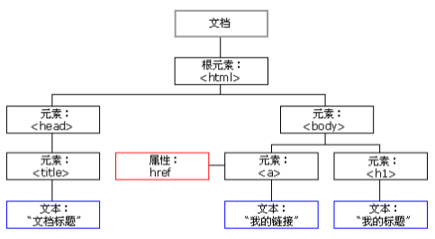

常见概念
JavaScript的组成
JavaScript基础分为三个部分：
ECMAScript：JavaScript的语法标准。包括变量、表达式、运算符、函数、if语句、for语句等。
DOM：文档对象模型（Document object Model），操作网页上的元素的API。比如让盒子移动、变色、轮播图等。
BOM：浏览器对象模型（Browser Object Model），操作浏览器部分功能的API。比如让浏览器自动滚动。
节点
节点（Node）：构成 HTML 网页的最基本单元。网页中的每一个部分都可以称为是一个节点，比如：html标签、属性、文本、注释、整个文档等都是一个节点。
虽然都是节点，但是实际上他们的具体类型是不同的。常见节点分为四类：
文档节点（文档）：整个 HTML 文档。整个 HTML 文档就是一个文档节点。
元素节点（标签）：HTML标签。
属性节点（属性）：元素的属性。
文本节点（文本）：HTML标签中的文本内容（包括标签之间的空格、换行）。
节点的类型不同，属性和方法也都不尽相同。所有的节点都是Object。
什么是DOM
DOM：Document Object Model，文档对象模型。DOM 为文档提供了结构化表示，并定义了如何通过脚本来访问文档结构。目的其实就是为了能让js操作html元素而制定的一个规范。
DOM就是由节点组成的。
解析过程：
HTML加载完毕，渲染引擎会在内存中把HTML文档，生成一个DOM树，getElementById是获取内中DOM上的元素节点。然后操作的时候修改的是该元素的属性。
DOM树：（一切都是节点）
DOM的数据结构如下：

上图可知，在HTML当中，一切都是节点（非常重要）。节点的分类，在上一段中，已经讲了。
整个html文档就是一个文档节点。所有的节点都是Object。
DOM可以做什么
找对象（元素节点）
设置元素的属性值
设置元素的样式
动态创建和删除元素
事件的触发响应：事件源、事件、事件的驱动程序
元素节点的获取
DOM节点的获取方式其实就是获取事件源的方式。关于事件，上一篇文章中已经讲到了。
想要操作元素节点，必须首先要找到该节点。有三种方式可以获取DOM节点：
1 | var div1 = document.getElementById("box1"); //方式一：通过 id 获取 一个 元素节点（为什么是一个呢？因为 id 是唯一的） |
既然方式二、方式三获取的是标签数组，那么习惯性是先遍历之后再使用。
特殊情况：数组中的值只有1个。即便如此，这一个值也是包在数组里的。这个值的获取方式如下：
1 | document.getElementsByTagName("div1")[0]; //取数组中的第一个元素 |
DOM访问关系的获取
DOM的节点并不是孤立的，因此可以通过DOM节点之间的相对关系对它们进行访问。
节点的访问关系，是以属性的方式存在的。
这里我们要重点知道parentNode和children这两个属性的用法。下面分别介绍。
获取父节点
调用者就是节点。一个节点只有一个父节点，调用方式就是
1 | 节点.parentNode |
获取兄弟节点
1、下一个节点 | 下一个元素节点：
Sibling的中文是兄弟。
（1）nextSibling：
火狐、谷歌、IE9+版本：都指的是下一个节点（包括标签、空文档和换行节点）。
IE678版本：指下一个元素节点（标签）。
（2）nextElementSibling：
- 火狐、谷歌、IE9+版本：都指的是下一个元素节点（标签）。
总结：为了获取下一个元素节点，我们可以这样做：在IE678中用nextSibling，在火狐谷歌IE9+以后用nextElementSibling，于是，综合这两个属性，可以这样写：
1 | 下一个兄弟节点 = 节点.nextElementSibling || 节点.nextSibling |
2、前一个节点 | 前一个元素节点：
previous的中文是：前一个。
（1）previousSibling：
火狐、谷歌、IE9+版本：都指的是前一个节点（包括标签、空文档和换行节点）。
IE678版本：指前一个元素节点（标签）。
（2）previousElementSibling：
- 火狐、谷歌、IE9+版本：都指的是前一个元素节点（标签）。
总结：为了获取前一个元素节点，我们可以这样做：在IE678中用previousSibling，在火狐谷歌IE9+以后用previousElementSibling，于是，综合这两个属性，可以这样写：
1 | 前一个兄弟节点 = 节点.previousElementSibling || 节点.previousSibling |
3、补充：获得任意一个兄弟节点：
1 | 节点自己.parentNode.children[index]; //随意得到兄弟节点 |
获取单个的子节点
1、第一个子节点 | 第一个子元素节点：
（1）firstChild：
火狐、谷歌、IE9+版本：都指的是第一个子节点（包括标签、空文档和换行节点）。
IE678版本：指第一个子元素节点（标签）。
（2）firstElementChild：
- 火狐、谷歌、IE9+版本：都指的是第一个子元素节点（标签）。
总结：为了获取第一个子元素节点，我们可以这样做：在IE678中用firstChild，在火狐谷歌IE9+以后用firstElementChild，于是，综合这两个属性，可以这样写：
1 | 第一个子元素节点 = 节点.firstElementChild || 节点.firstChild |
2、最后一个子节点 | 最后一个子元素节点：
（1）lastChild：
火狐、谷歌、IE9+版本：都指的是最后一个子节点（包括标签、空文档和换行节点）。
IE678版本：指最后一个子元素节点（标签）。
（2）lastElementChild：
- 火狐、谷歌、IE9+版本：都指的是最后一个子元素节点（标签）。
总结：为了获取最后一个子元素节点，我们可以这样做：在IE678中用lastChild，在火狐谷歌IE9+以后用lastElementChild，于是，综合这两个属性，可以这样写：
1 | 最后一个子元素节点 = 节点.lastElementChild || 节点.lastChild |
获取所有的子节点
（1）childNodes：标准属性。返回的是指定元素的子节点的集合（包括元素节点、所有属性、文本节点）。是W3C的亲儿子。
- 火狐 谷歌等高本版会把换行也看做是子节点。
用法：
1 | 子节点数组 = 父节点.childNodes; //获取所有节点。 |
（2）children：非标准属性。返回的是指定元素的子元素节点的集合。【重要】
- 它只返回HTML节点，甚至不返回文本节点。
- 在IE6/7/8中包含注释节点（在IE678中，注释节点不要写在里面）。
虽然不是标准的DOM属性，但它和innerHTML方法一样，得到了几乎所有浏览器的支持。
用法：（用的最多）
1 | 子节点数组 = 父节点.children; //获取所有节点。用的最多。 |
DOM节点的操作（重要）
上一段的内容：节点的访问关系都是属性。
本段的内容：节点的操作都是函数（方法）。
创建节点 createElement
格式如下：
1 | 新的标签(元素节点) = document.createElement("标签名"); |
比如，如果我们想创建一个li标签，或者是创建一个不存在的adbc标签，可以这样做：
1 | <script type="text/javascript"> |
插入节点 appendChild
插入节点有两种方式，它们的含义是不同的。
方式1：
1 | 父节点.appendChild(新的子节点); |
解释：父节点的最后插入一个新的子节点。
方式2：
1 | 父节点.insertBefore(新的子节点,作为参考的子节点) |
特别强调：
关于方式1的appendChild方法，这里要强调一下。比如，现在有下面这样一个div结构：
1 | <div class="box11"> |
上方结构中，子盒子box12是在父亲box11里的，子盒子box22是在父亲box21里面的。现在，如果我调用方法box11.appendChild(box22)，最后产生的结果是：box22会跑到box11中（也就是说，box22不在box21里面了）。这是一个很神奇的事情：
删除节点 removeChild
格式如下：
1 | 父节点.removeChild(子节点); |
解释：用父节点删除子节点。必须要指定是删除哪个子节点。
如果我想删除自己这个节点，可以这么做：
1 | node1.parentNode.removeChild(node1); |
复制节点（克隆节点）
格式如下：
1 | 要复制的节点.cloneNode(); //括号里不带参数和带参数false，效果是一样的。 |
括号里带不带参数，效果是不同的。解释如下：
不带参数/带参数false：只复制节点本身，不复制子节点。
带参数true：既复制节点本身，也复制其所有的子节点。
设置节点的属性
我们可以获取节点的属性值、设置节点的属性值、删除节点的属性。
我们就统一拿下面这个标签来举例：
1 | <img src="images/1.jpg" class="image-box" title="美女图片" alt="地铁一瞥" id="a1"> |
下面分别介绍。
1、获取节点的属性值
方式1：
1 | 元素节点.属性名; |
举例：（获取节点的属性值）
1 | <body> |
方式2：
1 | 元素节点.getAttribute("属性名称"); |
举例：
1 | console.log(myNode.getAttribute("src")); |
方式1和方式2的区别在于：前者是直接操作标签，后者是把标签作为DOM节点。推荐方式2。
2、设置节点的属性值
方式1举例：（设置节点的属性值）
1 | myNode.src = "images/2.jpg" //修改src的属性值 |
方式2：
1 | 元素节点.setAttribute("属性名", "新的属性值"); |
方式2举例：（设置节点的属性值）
1 | myNode.setAttribute("src","images/3.jpg"); |
3、删除节点的属性
格式：
1 | 元素节点.removeAttribute(属性名); |
举例：（删除节点的属性）
1 | myNode.removeAttribute("class"); |
总结
获取节点的属性值和设置节点的属性值，都有两种方式。
如果是节点的“原始属性”（比如 普通标签的class/className属性、普通标签的style属性、普通标签的 title属性、img 标签的src属性、超链接的href属性等），方式1和方式2是等价的，可以混用。怎么理解混用呢？比如说：用 div.title = '我是标题'设置属性，用 div.getAttribute('title')获取属性，就是混用。
但如果是节点的“非原始属性”，比如：
1 | div.aaa = 'qianguyihao'; |
上面的这个“非原始属性”，在使用这两种方式时，是有区别的。区别如下：
方式1 的
元素节点.属性和元素节点[属性]：绑定的属性值不会出现在标签上。方式2 的
get/set/removeAttribut：绑定的属性值会出现在标签上。这两种方式不能交换使用，get值和set值必须使用同一种方法。
举例：
1 | <body> |
DOM对象的属性-补充
innerHTML和innerText的区别
value：标签的value属性。
innerHTML：双闭合标签里面的内容（包含标签）。
innerText：双闭合标签里面的内容（不包含标签）。（老版本的火狐用textContent）
获取内容举例：
如果我们想获取innerHTML和innerText里的内容，看看会如何：（innerHTML会获取到标签本身，而innerText则不会）
修改内容举例：（innerHTML会修改标签本身，而innerText则不会）
nodeType属性
这里讲一下nodeType属性。
nodeType == 1 表示的是元素节点（标签） 。记住：在这里，元素就是标签。
nodeType == 2 表示是属性节点。
nodeType == 3 是文本节点。
nodeType、nodeName、nodeValue
我们那下面这个标签来举例：
1 | <div id="box" value="111"> |
上面这个标签就包含了三种节点：
元素节点（标签）
getElementById属性节点
getAttributeNode文本节点
firstChild
获取这三个节点的方式如下：
1 | var element = document.getElementById("box1"); //获取元素节点（标签） |
既然这三个都是节点，如果我想获取它们的nodeType、nodeName、nodeValue，代码如下：
1 | var element = document.getElementById("box1"); //获取元素节点（标签） |
文档的加载
浏览器在加载一个页面时，是按照自上向下的顺序加载的，读取到一行就运行一行。如果将script标签写到页面的上边，在代码执行时，页面还没有加载，页面没有加载DOM对象也没有加载，会导致无法获取到DOM对象。
onload 事件：
onload 事件会在整个页面加载完成之后才触发。为 window 绑定一个onload事件，该事件对应的响应函数将会在页面加载完成之后执行，这样可以确保我们的代码执行时所有的DOM对象已经加载完毕了。
代码举例：
1 |
|
上方代码中，方式一和方式二均可以确保：在页面加载完毕后，再执行 js 代码。